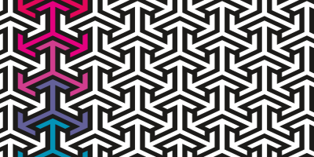
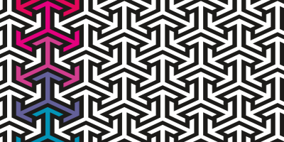

My name is Maurizio (Ritz), and this page was designed
and launched by me. Here's some info on me.
I obtained a bachelor's degree
in Cognitive Neuroscience and Health Psychology at Murdoch
University in 2019. I am currently enrolled in a bachelor's for
Computer Science, expecting to complete it by 2023. My goal
is to transition into a role within the technology industry,
preferably as a full-time developer.
As part of my passion for technology, I enrolled in Full Stack
Web Development Bootcamp, where I am learning HTML, CSS, JavaScript,
and soon will be learning more back-end development. Having previous
experience with basic C and Java, I am familiar with the fundamentals
of creative problem-solving, algorithm design, and programming.
One of my first full front-end projects is this page you are
looking at right now. In this page, I have implemented several
different techniques to manipulate the layout of all these
elements. It has been challenging and time-consuming, however,
this task has allowed me to improve my designing abilities. I have
used media queries, pseudo-classes, general classes and semantic
selectors to lay out the elements on this page.
In my spare time, I like to tinker with computer parts, learn about hardware, and the
newest advancements in technology. I also have an interest in
game design, game development and simulated physics engines.
About Me
Work


 
